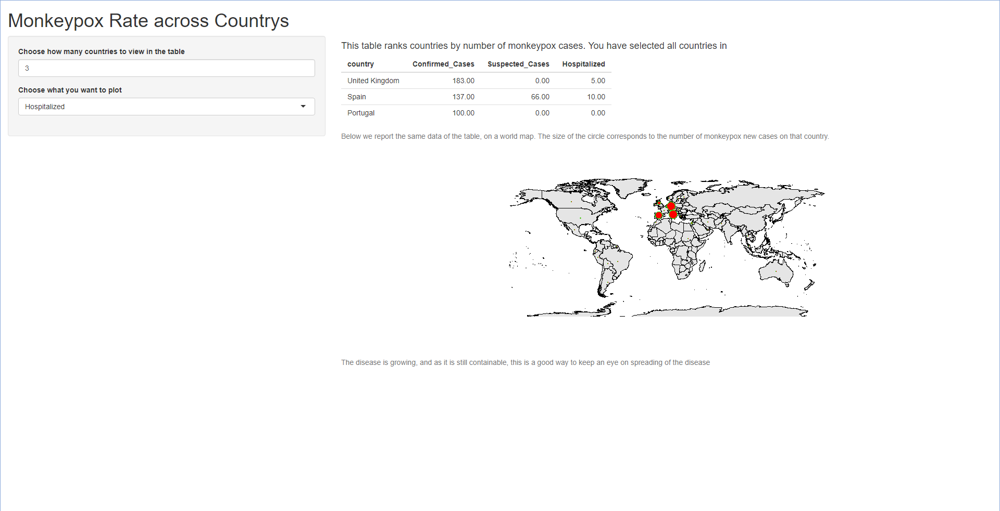

I like the idea of making non-R users play with data. thanks to the R shiny package this is possible and I wil be showing you my code for a web application.
shiny package
Shiny is a package created by Rstudio that makes it possible to build interactive web applications with R. that would mean that everyone can use it, R experienced or not.
Context
Monkeypox is an infectious disease caused by the monkeypox virus that can occur in certain animals, including humans. Symptoms begin with: fever, headache, muscle pains, swollen lymph nodes and feeling tired. An ongoing outbreak of monkeypox was confirmed on May 6th 2022, beginning with a Britisch resident who, after traveling to Nigeria (where the disease is endemic), presented symptoms consistent with the monkeypox. The resident who went to Nigeria returned to the United kingdom, creating the country’s index case of the outbreak. The disease is spreading around countrys, and
My web application
The application I have build allows the user to explore and visualize data about new cases of monkeypox from multiple countrys in the world. Its quite a simple application, you get: A table of countries sorted from the hightest monkeypox rate to the lowest monkeypox rate. A world map with data plotted on it.
Dataset
My dataset includes countrys, confirmed cases, suspected cases, Hospitalized and travel history from people who have, or might have the monkeypox virus. The dataset was created by: Deep Contractor and was obtained from: https://www.kaggle.com/datasets/deepcontractor/monkeypox-dataset-daily-updated?select=Monkey_Pox_Cases_Worldwide.csv
CODE
First I needed to prepare the data:
library(shiny)
library(maps)
library(dplyr)
library(neattools)# Source my monkeypox file with data
monkeypox_data<- read.csv("data_raw/010_free_space/Monkey_Pox_Cases_Worldwide.csv")To plot a map with on it an indication on how bad the infections were per country, I would need a package that allows you to print a world map. the package maps would do that for me. To plot the indication per country, I would need a data frame with the longtitudes and latitudes from all countrys in the world, I found the following dataset online: https://www.kaggle.com/datasets/paultimothymooney/latitude-and-longitude-for-every-country-and-state
# source of country latitude and longtitude
countryCoordinates <- read.csv("data_raw/010_free_space/world_country_and_usa_states_latitude_and_longitude_values.csv")
countryCoordinates2 <- countryCoordinates[,c(2,3,4)]Next I would want to merge these datasets so the latitude and longtitude, and rate of infections were in the same graph, I did the following:
#Rename column to make it merge with dataset
names(monkeypox_data)[names(monkeypox_data)=="Country"]<-"country"
#rename england to united kingdom
monkeypox_data<-replacevalue(monkeypox_data, "country", "England", "United Kingdom")
# Create a smaller data frame including only my variables of #interest:country, monkeypox rate, continent
x<- monkeypox_data[,c(1,2,3,4)]
mergedCleaned <- merge(monkeypox_data, countryCoordinates2, by="country", all.x=FALSE)
mergedCleanedNow that I have my dataset ready, I want to start by making the shiny web application. To do this I need to create two different components: A user interface definition and a server script. the user interface definition is called ui.R and the server script server.R. they both need to be in the same folder.
Below are the scripts for the user interface and the server components:
## server.R
library(shiny)
library(maps)
library(dplyr)
library(neattools)
# Source my monkeypox file with data
monkeypox_data<- read.csv("data_raw/Monkey_Pox_Cases_Worldwide.csv")
names(monkeypox_data)[names(monkeypox_data)=="Country"]<-"country"
monkeypox_data<-replacevalue(monkeypox_data, "country", "England", "United Kingdom")
monkeypox_data
# source of country latitude and longtitude
countryCoordinates <- read.csv("data_raw/world_country_and_usa_states_latitude_and_longitude_values.csv")
countryCoordinates2 <- countryCoordinates[,c(2,3,4)]
countryCoordinates2
# Create a smaller data frame including only my variables of #interest:country, monkeypox rate, continent
x<- monkeypox_data[,c(1,2,3,4)]
mergedCleaned <- merge(monkeypox_data, countryCoordinates2, by="country", all.x=FALSE)
mergedCleaned
# Define server logic to plot monkeypox data for various #continents/countries
shinyServer(function(input,output){
# Sentence presenting the table in a reactive expression
tableText<- reactive({
paste("This table ranks countries by number of monkeypox cases. You have selected all countries in")
})
# now I return the tabletText for printing as a caption
output$caption<- renderText({
tableText()
})
# Plot a table that ranks countries (from most affected to the least) by monkeypox rate
output$rank<- renderTable({
head(x[order(x$Confirmed_Cases, decreasing=T),], n = input$obs)
})
# Plot a world map visualizing monkeypox incidence. The radius of the circle correspond
# to the number of monkeypox new cases (larger radius = more monkeypox new cases)
output$map<- renderPlot({
map("world",col="gray90", fill=TRUE)
radius <- (mergedCleaned[,input$plottie])
symbols(mergedCleaned$longitude, mergedCleaned$latitude, bg = "red", fg = "green", lwd = 0.1, circles = radius, inches = 0.12, add = TRUE)
})
})and the code for the UI component of the shiny app:
##ui.R
library(shiny)
library(maps)
library(dplyr)
library(neattools)
# Source my monkeypox file with data
monkeypox_data<- read.csv("data_raw/Monkey_Pox_Cases_Worldwide.csv")
names(monkeypox_data)[names(monkeypox_data)=="Country"]<-"country"
monkeypox_data<-replacevalue(monkeypox_data, "country", "England", "United Kingdom")
monkeypox_data
# source of country latitude and longtitude
countryCoordinates <- read.csv("data_raw/world_country_and_usa_states_latitude_and_longitude_values.csv")
countryCoordinates2 <- countryCoordinates[,c(2,3,4)]
countryCoordinates2
# Create a smaller data frame including only my variables of #interest:country, monkeypox rate, continent
x<- monkeypox_data[,c(1,2,3,4)]
mergedCleaned <- merge(monkeypox_data, countryCoordinates2, by="country", all.x=FALSE)
mergedCleaned
# Define UI for my first breast cancer application
shinyUI(pageWithSidebar(
# my Application title
headerPanel("Monkeypox Rate across Countrys"),
# a sidebar with controls to select the continent for wich I want to see the distribution
sidebarPanel(
numericInput("obs", "Choose how many countries to view in the table", 3),
selectInput("plottie", "Choose what you want to plot", choices = c("Confirmed_Cases", "Suspected_Cases", "Hospitalized"))
),
mainPanel(
h4(textOutput("caption")),
tableOutput("rank"),
helpText("Below we report the same data of the table, on a world map. The size of the circle corresponds to the number of monkeypox new cases on that country."),
plotOutput("map"),
helpText("The disease is growing, and as it is still containable, this is a good way to keep an eye on spreading of the disease")
)
))To show you what my shiny application looks like I added a screenshot down below, to acces my shiny application visit my github page: https://github.com/TimoVoskuilen/apenpokken and download my project. there you will be able to run the application.
